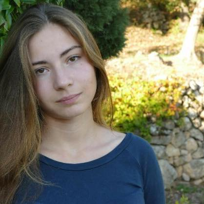

PhD subject
My current research focuses on discrete dynamical systems, boolean
networks and the abstraction of biological systems.
Talks
- Dynamic Abstract Interpretation of Partial Reaction Networks
- Construction of Semi-Uniform Membranes Structures in a Uniform Way
Teaching
- 2025-2026
- 2024-2025
- 2023-2024
- Colles d’informatique en MPI (Lycée du Parc)
- 2020-2021
- Colles de mathématique en PCSI (CIV)